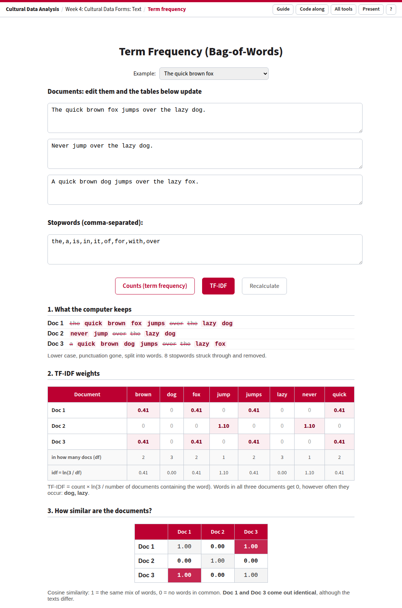

How a text becomes a row of numbers · Week 3 (preview) and Week 4: Cultural Data Forms: Text
Before a computer can compare, search or classify texts, it has to turn them into numbers. The simplest way is to count words: the bag of words. This tool does it for three short documents you can edit, weights the counts with TF-IDF, and measures how similar the documents then look. You can see exactly what survives the counting and what is lost.

The example documents in TF-IDF mode.
| Part | What it is |
|---|---|
| Example | Three ready-made sets: the quick brown fox, who bites whom, and the house-and-garden documents from the Week 4 code-along. Typing in any box switches to Your own text. |
| Documents | Three boxes of text. Everything below updates as you type. |
| Stopwords | Words to leave out, separated by commas. |
| Counts / TF-IDF | How to weight the words: plain counts, or counts × how rare the word is across the three documents. Space switches. |
| 1. What the computer keeps | Each document as the computer reads it: lower case, no punctuation, one word at a time. Kept words are highlighted; stopwords are |
| 2. The table | One row per document, one column per vocabulary word. In TF-IDF mode two extra rows show in how many documents each word occurs (df) and its weight (idf). |
| 3. Similarity | How alike each pair of rows is (cosine similarity): 1.00 = the same mix of words, 0.00 = nothing in common. Darker = more similar. The sentence below names identical documents, or the most and least similar pair. |
Links that open an example. ?example=bites or ?example=house; your own text with
?d1=…&d2=…&d3=…&stop=…; add &mode=tfidf to open in TF-IDF.
Keys: Space counts/TF-IDF, P presentation mode, ? help, G this guide.
TfidfVectorizer uses a smoothed variant, so its numbers differ slightly.There is no stemming: “jump” and “jumps” are different words. In Python, steps 1–5 are what CountVectorizer does.
Open with the example documents
| brown | dog | fox | jump | jumps | lazy | never | quick | |
|---|---|---|---|---|---|---|---|---|
| Doc 1 The quick brown fox jumps over the lazy dog. | 1 | 1 | 1 | 0 | 1 | 1 | 0 | 1 |
| Doc 2 Never jump over the lazy dog. | 0 | 1 | 0 | 1 | 0 | 1 | 1 | 0 |
| Doc 3 A quick brown dog jumps over the lazy fox. | 1 | 1 | 1 | 0 | 1 | 1 | 0 | 1 |
| bites | bitten | by | dog | man | was | |
|---|---|---|---|---|---|---|
| Dog bites man. | 1 | 0 | 0 | 1 | 1 | 0 |
| Man bites dog. | 1 | 0 | 0 | 1 | 1 | 0 |
| The man was bitten by the dog. | 0 | 1 | 1 | 1 | 1 | 1 |
The two sentences that mean opposite things get the same vector (similarity 1.00). The two that mean the same thing (“dog bites man” and “the man was bitten by the dog”) share only two words. Counting words keeps what a text is about and loses who does what.
dog to the stopwords. The one word all three documents share disappears.Open the fox example in TF-IDF press Space to switch back and forth
TF-IDF rewards words that are frequent in one document and rare in the others: the words that make a document distinctive. That is why the State of the Union exercise uses TF-IDF to find each speech's top words: words that every speech uses score low.
Open with the Week 4 documents
These are the three documents and the stopword list from the Week 4 code-along, so students can check their Python output against the tool.
Used in the Week 3 and Week 4 lectures. Source: tools/text.